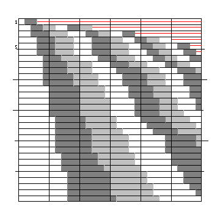

Magic system
This magic system, known to the players as .DSYS, and to others as another instance of “Oh god, the Cambridge Magic System”. WPR is Willpower, another, new, characteristic.
| Stat | Caster Type | 1 | 2 | 3-5 | 6-8 | 9-11 | 12-13 | 14-15 | 16-18 | 19-21 | 22-26 | 27-30 | 31-33 | 34 & up |
|---|---|---|---|---|---|---|---|---|---|---|---|---|---|---|
| INT | All | -9 | -6 | -3 | -1 | 0 | +1 | +1 | +2 | +2 | +3 | +4 | +5 | +6 |
| CHA | Elementalist | -9 | -6 | -3 | -1 | 0 | +1 | +2 | +3 | +4 | +5 | +6 | +7 | +8 |
| DEX | Illusionist | -6 | -4 | -2 | 0 | +1 | +2 | +3 | +4 | +5 | +6 | +7 | +8 | +9 |
| WPR | Enchanter | -9 | -6 | -3 | -1 | 0 | +1 | +1 | +2 | +2 | +3 | +3 | +4 | +5 |
Stats used are INT&CHA for elementalist spells, INT&DEX for illusions, INT&WPR for enchantments and INT twice for general magic spells. Open ended rolling up and/or per species bonuses could result in high stat values (a Noldor elf had, IIRC a percentile roll that pushed 18(00) CHA up to mean 30 and then took a D4 bonus on top of that). At least in some branches of this system the stats used for bonuses were intended to make women and elves potent at Elemental magic.
| Humans,Elves, etc: | Wiri | ||
|---|---|---|---|
| In specialisation | +3 | Elementalist spell | +7 |
| Out of specialisation | -8 | Illusionist spell | +3 |
| General spells | +0 | All other spells | -10 |
| Generalist caster | +0 | ||
Wiri were a local “special”; warriors or mages, always Lawful/Good, small furballs with legs. They had reasonable natural armour, but could not wear other armour, and gained one size up of hit dice. They needed some stat minima, and took 5000ep base for warrior, 6250ep base for MU, if I understand my notes correctly. I don't have the full spec, as I never cared to use them.
Casting spells
Excess E = ( bonuses + d20 + MU Level ) - (10 + 2 * spell level) - penalties
Maximum castable level = (INT * √ (MU Level))/6
| 0 or greater | spell succeeds, effect depends on value of E |
|---|---|
| -1 to -3 | no effect |
| -4 to-6 | backfire, see spell table for effect |
| -7 or Less | Insanity, see table below |
| Value of E | Effect on MU | Experience Levels Lost |
|---|---|---|
| -7 to -9 | Feeblemind 3d6 mins | None |
| -10 to -11 | Feeblemind d6 hours | 1 |
| -12 to -13 | Catatonic 3d6 mins | 2 |
| -14 to -15 | Catatonic d6 hours | 3 |
| -16 to -17 | Permanently catatonic | 4 |
| -18 to -22 | Homicidal | 5 |
| -23 to -27 | Death | 6 |
| -28 down | Irrecoverable Death | N/A |
NOTE: Levels lost cannot be recovered by a clerical “restoration” spell. After an insanity result, the MU cannot cast any spells for a number of days equal to |E+7|
Casting time
Standard casting time = ( spell level + 2 ) seconds (where 1 round = 2 seconds)
For each second reduction in time there is a penalty of -1 on that cast. If the caster wishes to reduce the casting time below 1 second, a different penalty system is imposed:
Penalty for 1/N second = N * (spell level + 2);
Fatigue
The other source of penalties on spell casts is due to the MU 'running out of energy' as he/she casts more and more spells. According to the level of the MU casting the spell, and the total number of spell levels cast already (NOT including the spell about to be cast), consult the following table (sorry, there never was a formula that I knew of):
MU level counts down, one band per level, so up to level 30 here, and across (marked in fives of levels cast, so the table runs up to 30 levels cast). The bands are of increasing penalty (zero for white, -1 for dark grey, -2 light, -3 white again and so on). The red line means each spell level cast is an extra -1, so for 1st level caster, the table is 0,1,1,2,3,4... Fatigue recovers in 60/CON hours after incurred.
Spell lists
Generalist spells are things like Detect Magic, Detect Evil, Read Magic, and Dispel Magic. Enchanter and Illusionist spells are roughly the two schools as per the usual spell listings, and Elementalist are all the rest, but the repertoire was drawn from the much smaller pool of spells in the original rules set. The spell lists are too cumbersome to scan in (line printer paper), and a pain to transcribe manually, so only a sampler:-
Sample Enchanter spell effect charts
2) The Healing touch of Fortash
Backfire - not known
Success - heal = (E+1)/2 points, rounding up
2) ESP
Backfire - Thought projection as for E = 4d6
Success - range = (E+1) paces, duration 3(E+1) minutes
Sample Elementalist spell effect charts
1) Knock
Backfire -Hold Portal, E= d20
Success - open door at STR = E+14
| Excess | Number | Range |
|---|---|---|
| @ d6+1 each missile 1pace ~ 75cm |
||
| Backfire | Take d6 damage | |
| 0-1 | 1 | 5 paces |
| 2-3 | 1 | 10 |
| 4-5 | 1 | 15 |
| 6-8 | 2 | 20 |
| 9-11 | 2 | 30 |
| 12-14 | 2 | 40 |
| 15-19 | 3 | 50 |
| 20-24 | 3 | 60 |
| 25-29 | 4 | 65 |
| +5 | +1 | +5 |
| Excess | D6s | Range/length |
|---|---|---|
| Bolts and beams fold to their full lengths.
FB fills dice times 200 m3 |
||
| Backfire | Storm spell on caster E=2d10 | |
| 0-1 | 1 | 20 paces |
| 2-3 | 1 | 35 |
| 4-5 | 2 | 50 |
| 6-8 | 4 | 60 |
| 9-11 | 6 | 70 |
| 12-14 | 8 | 80 |
| 15-19 | 9 | 90 |
| 20-24 | 10 | 100 |
| 25-29 | 12 | 110 |
| +5 | +2 | +10 |
| Excess | Damage/round | Duration | Range | Diameter |
|---|---|---|---|---|
| 2s rounds, remember! | ||||
| Backfire: | Storm spell on caster E=5d6 | |||
| 0-1 | 2d4 | 1 min | 5 paces | 5 paces |
| 2-3 | 2d6 | 2 | 8 | 7 |
| 4-5 | 2d8 | 3 | 10 | 9 |
| 6-8 | 3d6 | 4 | 20 | 12 |
| 9-11 | 3d8 | 5 | 30 | 14 |
| 12-14 | 3d10 | 6 | 40 | 16 |
| 15-19 | 5d6 | 7 | 45 | 20 |
| +5 | +d6 | +1 | +5 | +5 |
Example
My L12 MU Ororo, with Int 17 (+2), Cha 22(+5), Dex 14 (+3) Wpr 7 (-1) is +10 Elementalist, +4 for general spells, -3 Illusionist, and -7 Enchanter.
At 1/4s casting time, Magic Machinegun is at penalty 12, giving E = 22+d20-24 = d20-2 when fresh. If she does that all round, for the second half of the round she is at an extra -1, and after two rounds, with 16 spell levels cast, she is at E = d20-5, and thinking about slowing down.
A 2s Fireball is then E = d20 for her.
Flaws
The numbers meant generalist spells were rarely used and out-of-specialty never. Sub-second casting is probably too easy. The de facto need to bring spells down to 1 round or less means that a new spell level is gained every three levels - even MU12s didn't cast higher than 4th level except outside adventures. The system as written also suffered a legacy problem from its ancestors, that using Charm spells to control the minds of others could cause the enchanter to gain WPR, and hence increase his stat bonus, but no other spells had such permanent benefit.
The three-way division of spells worked with the small spell lists of the time of devising (pre-1978), but would need reworking for the bigger lists - I'd started to do that by splitting Enchanter to put the body/life-form affecting spells into a Sorcerer group (CON), and the raw energy spells from Elementalist to Luminor (STR), and evening up the stat bonuses to (INT+req)/3 - 8 rather than use tables - but that didn't address the other flaws.
Cleric system
A cleric has (level*(level+1)/2) + (faith-13) piety points. D20+points used must exceed the spell level. A roll of 1 always fails, and at least one point must be used per casting. Failures have no effect. Spell levels ran from 4 (for things normally given as abilities) through 15 for the normal lowest level spells, up to 50 for the most powerful spells; or to a first approximation, spell level = 10+5*common level for spell.
There was a separate druid system, which combined elements of both of the above, but it was imported from another campaign, and never quite fitted. The idea that system had of making Druids not at all hasty (just like Ents) was that they didn't mesh with sub-second MU castings, and encounters geared to that sort of speed.
Material Copyright © 2001–2003 Steve Gilham